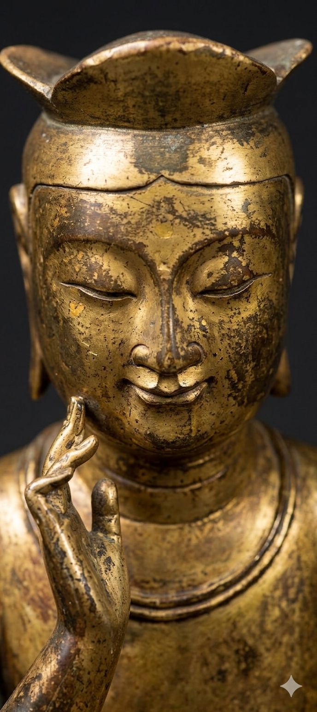

반가사유: 사유의 소리 (1단계: 조우)
사유의 상담소
✕
전체
작품론
비교철학
예술기법
전시철학
사유명상
조각상: 당신의 깊은 고민이나 궁금증을 물어보세요. 제가 사유의 길을 안내해 드립니다.
전송
작품 소개
관람 가이드
다음 단계: 공명의 시간
1) 조각상의 고정 대본 대화
2) 조각상의 AI 상호 사유 대화
1) 반가사유상과의 대화
2) 생각하는 사람과의 대화
제목
내용
닫기
체화 단계를 시작합니다
